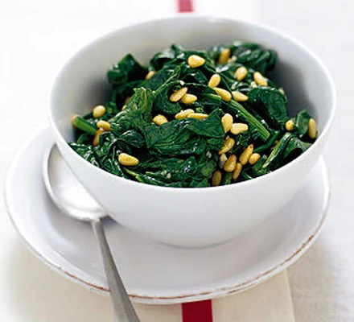

Spinach with pine nuts & garlic

A stylish side dish that's ready in a flash
Ingredients
- 1kg fresh spinach, or 500g frozen leaf spinach
- 3 tbsp olive oil
- 3 tbsp pine nut
- 2 garlic cloves, finely chopped or crushed
Steps
- Wash the spinach thoroughly and cram into a large pan. Pour over a little boiling water, cover tightly and cook for 2-3 mins, until the leaves have wilted.
- Tip into a colander and drain well. Use the side of a small plate to press the spinach down to extract the last of the water. If using frozen, defrost in the microwave and drain.
- Meanwhile heat the oil, add the pine nuts and fry until golden. Add the garlic and fry briefly, then stir in the spinach and stir until heated through. Season and serve in a warm side dish.
Return to home